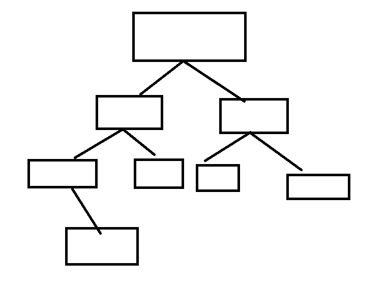

1. Recursion
1-1. Tree 무엇인가
Tree, 이름만 보시면 그냥 나무임을 알 수 있습니다.
사실 이걸 왜 트리라하는지는 잘 모르겠습니다. 차라리 뿌리 였으면 보기에도 맞는 거 같지만, 선배 엔지니어들이 그렇다고 하면 그런 거겠죠.
들어가기 전 알아야하는 단어
- 레벨: 트리의 각층 번호
- 높이: 트리의 최대레벨
- 차수: 노드의 자식 노드수
2. 이진 트리
2-1. 이진트리의 종류
-
유우아유무카스밍아이리나엠마카린
이렇게 각 노드당 두개씩 찬 트리를 포화트리라고 합니다.
-

마지막 높이가 h일때 레벨 1부터 h-1 까지는 노드가 모드 채워지고, 마지막 레벨에서는 노드가 순서대로 채워지는 걸 트리를 의미합니다.
2-2. 이진트리의 순환 종류
node의 구현
- 각 노드당 왼쪽 오른쪽, 하나씩 두개만 들어갈 수 있고 자신의 왼쪽 자식은 t->left란 변수에 저장되어있고, 오른쪽은 t->right에 저장되어있음.
- data에 그 node의 데이터가 들어가있음
- 전위: 부모노드 -> 왼쪽 자식 노드 -> 오른쪽 자식 노드
- 중위: 왼쪽 자식 노드 -> 부모노드 -> 오른쪽 자식 노드
- 후위: 왼쪽 자식 노드 -> 오른쪽 자식 노드 -> 부모노드
void front_processing( node *t ){
if (t != tail) {
print( t -> data );
front_processing(t -> left);
front_processing(t -> right);
}
}
void middle_processing( node *t ){
if (t != tail) {
middle_processing(t -> left);
print( t -> data );
middle_processing(t -> right);
}
}
void after_processing( node *t ){
if (t != tail) {
after_processing(t -> left);
after_processing(t -> right);
print( t -> data );
}
}
3. 느낀점
처음해보는 비선형 구조라, 원리 위주의 수업이라 그런지 공부할때 피곤함이 많이 느껴졌습니다. 익숙해지면 안 그러겠죠? 라는 믿음으로 공부하겠습니다.